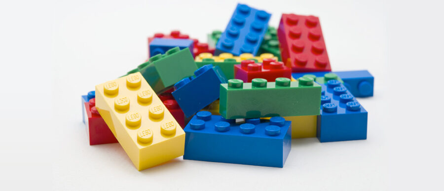
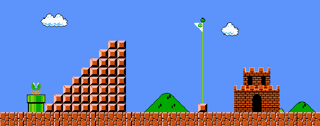

15 de Maio de 2023
O Inicio da Jornada
Aprender HTML e CSS é tão emocionante quanto a evolução do personagem Naruto. Assim como Naruto, que começou como um jovem ninja inexperiente e se tornou um poderoso herói, começamos com os conceitos básicos do HTML e CSS e evoluímos para criar páginas web incríveis.
Assim como Naruto aprimorou suas habilidades de luta ao longo do tempo, nós também aprimoramos nossas habilidades de codificação. Começamos com elementos e estilos simples, assim como Naruto dominou as técnicas básicas de ninjutsu. Com o tempo, aprendemos a usar seletores avançados e propriedades complexas, assim como Naruto aprendeu poderosos jutsus e dominou seu modo sábio.
Como Naruto encontrou apoio em seus amigos e mentores, também podemos contar com a comunidade de desenvolvedores para nos ajudar. Trocamos ideias, tiramos dúvidas e aprendemos uns com os outros, assim como Naruto recebeu orientação de Jiraiya, Kakashi e outros personagens.
E, assim como a história de Naruto continua a evoluir, também continuamos a aprender e explorar novas técnicas e tendências no desenvolvimento web. Com determinação e dedicação, assim como Naruto, podemos alcançar resultados incríveis e nos tornar verdadeiros mestres na criação de páginas web com HTML e CSS.
16 de Maio de 2023
Estilizando o Mundo: Explorando as Maravilhas do CSS

Ao aprender CSS, adquirimos o poder de adicionar estilo e personalidade às nossas páginas web. Exploramos conceitos como seletores, modelo de caixa, Flexbox e personalização de fontes.
Com essas habilidades, podemos criar layouts responsivos, aplicar estilos precisos e adicionar um toque único ao design. Ao conectar o CSS ao HTML e utilizar links de forma eficiente, aprimoramos a experiência do usuário e garantimos que nossas páginas sejam visualmente atraentes e funcionalmente eficientes. Com o conhecimento em CSS, temos as ferramentas necessárias para transformar nossas ideias em realidade digital e criar páginas web impactantes.
17 de Maio de 2023
Um Novo Universo
No contexto do desenvolvimento web, uma adaptação da famosa citação "Com grandes poderes vêm grandes responsabilidades" pode ser incorporada da seguinte maneira:
Assim como no universo do Homem-Aranha, no qual o personagem é lembrado de que "Com grandes poderes vêm grandes responsabilidades", no mundo do desenvolvimento web, também somos confrontados com essa realidade. À medida que adquirimos conhecimentos e habilidades para criar sites e aplicativos impressionantes, também assumimos uma responsabilidade em relação aos resultados que produzimos.
Como desenvolvedores, temos o poder de moldar a experiência digital das pessoas, influenciando a forma como interagem com a tecnologia. Com isso em mente, é fundamental agir com responsabilidade e ética em nossas práticas de desenvolvimento. Devemos garantir que nossos produtos sejam acessíveis a todos os usuários, que respeitem a privacidade e a segurança, e que proporcionem uma experiência positiva.
A citação também nos lembra da importância de usar nossas habilidades para o bem. Podemos contribuir para a comunidade de desenvolvimento, compartilhando conhecimentos, ajudando outros desenvolvedores e promovendo um ambiente de colaboração e aprendizado mútuo.
Portanto, à medida que exploramos o Grid Layout, importamos elementos visuais e criamos interações atraentes no site, é essencial lembrar que, assim como os super-heróis, temos a responsabilidade de usar nossos poderes de desenvolvimento de forma responsável, consciente e com um impacto positivo na vida das pessoas.
18 de Maio de 2023
A Magia das animações

Durante nossa jornada, mergulhamos no mundo do desenvolvimento web e exploramos ferramentas incríveis, como o seletor de Webkit. Com essa poderosa ferramenta, pudemos personalizar elementos do navegador, proporcionando uma experiência única aos usuários. Um toque nerd que adicionamos foi a customização do scrollbar da página, trazendo um visual personalizado e temático.
Não poderíamos deixar de lado as animações, não é mesmo? Aprendemos a criar animações com efeito de hover na imagem, permitindo que quando o cursor do mouse estivesse sobre o elemento, uma animação especial fosse acionada. Isso adicionou um toque dinâmico e divertido ao nosso site.
Exploramos também as animações com Keyframes, uma ferramenta poderosa para controlar as etapas de uma sequência de animação CSS. Utilizamos essa técnica para criar uma animação de entrada impactante, aplicando-a ao "aside" e à "nav" do nosso site. Assim, demos vida aos elementos e deixamos nossa página mais atraente para os usuários.
Além disso, não poderíamos deixar de tornar nosso site responsivo. Utilizamos as regras de mídia (media queries) para ajustar o layout e o tamanho da fonte em diferentes dispositivos, garantindo que a página se adaptasse perfeitamente a telas de diversos tamanhos. Nessa etapa, fizemos modificações no grid do "body", ajustamos o "aside" e removemos o scroll somente da "nav".
19 de Maio de 2023
Apenas o Inicio
Cheguei ao grande final da minha jornada, mas lembro-me de que nunca é realmente o fim!
Por último, porém não menos importante, aprendi a trabalhar com Git e Github. Agora sei como iniciar o Git no meu projeto utilizando o comando "git init", adicionar todas as modificações ao stage com "git add .", e criar pontos na história do projeto através do comando "git commit -m 'initial commit'".
Além disso, compreendi como criar um repositório no Github, enviando o meu projeto para o repositório remoto. Fiz novos commits, como por exemplo, o README, utilizando a própria interface do VSCode.
Agora posso publicar o meu projeto, tornando-o disponível e acessível de qualquer lugar. Fico empolgado em compartilhar o meu trabalho e colaborar com outros desenvolvedores!
O Git, uma ferramenta de controle de versões, e o Github, uma plataforma online que utiliza o Git, me proporcionaram um ambiente ideal para gerenciar o meu projeto e trabalhar de forma mais eficiente com outras pessoas.
Nessa jornada, também aprendi sobre a importância de documentar o meu projeto através do README, fornecendo informações essenciais sobre o propósito, a configuração e a utilização do meu código.
Com essa conclusão, sinto-me preparado para embarcar em novas aventuras, sempre em busca de conhecimento e aprimoramento. Isso é tudo pessoal.